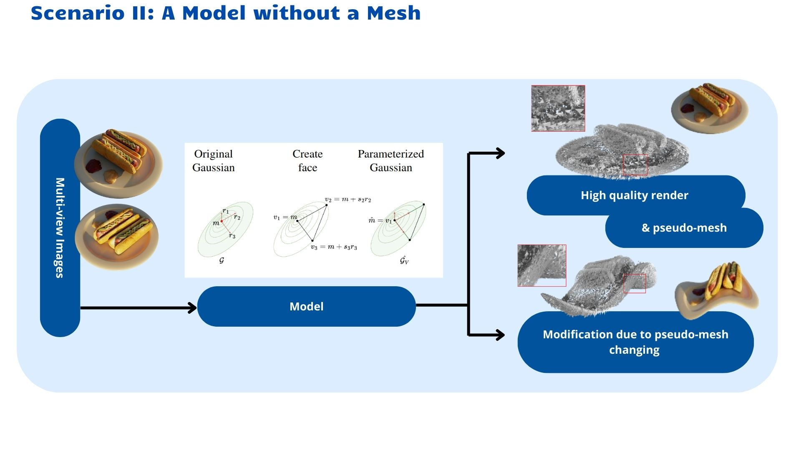
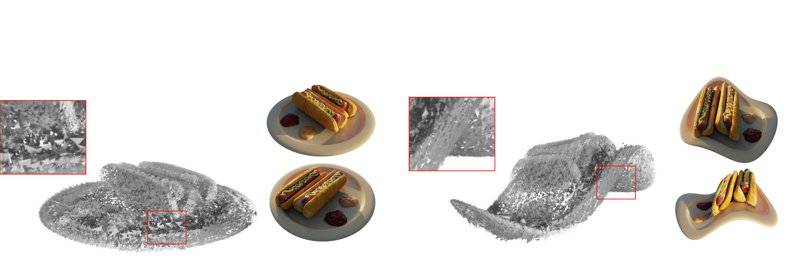
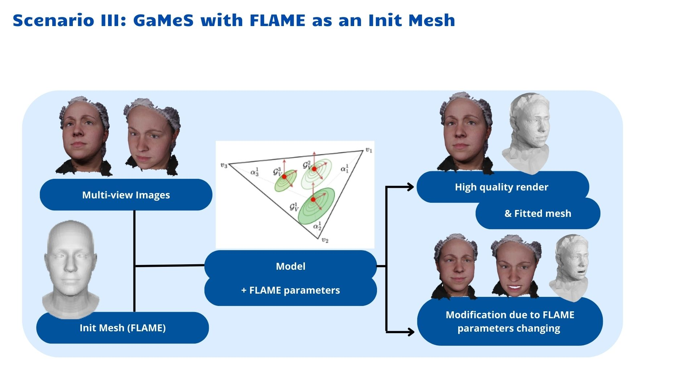

Recently, a range of neural network-based methods for image rendering have been introduced. One such widely-researched neural radiance field (NeRF) relies on a neural network to represent 3D scenes, allowing for realistic view synthesis from a small number of 2D images. However, most NeRF models are constrained by long training and inference times. In comparison, Gaussian Splatting (GS) is a novel, state-of-the-art technique for rendering points in a 3D scene by approximating their contribution to image pixels through Gaussian distributions, warranting fast training and swift, real-time rendering. A drawback of GS is the absence of a well-defined approach for its conditioning due to the necessity to condition several hundred thousand Gaussian components. To solve this, we introduce the Gaussian Mesh Splatting (GaMeS) model, which allows modification of Gaussian components in a similar way as meshes. We parameterize each Gaussian component by the vertices of the mesh face. Furthermore, our model needs mesh initialization on input or estimated mesh during training. We also define Gaussian splats solely based on their location on the mesh, allowing for automatic adjustments in position, scale, and rotation during animation. As a result, we obtain a real-time rendering of editable GS.
|
In summary, this work makes the following contributions:
We introduce a hybrid representation for 3D objects, seamlessly integrating mesh and GS. GaMeS work on the simple pseudo-mesh that can be estimated directly from Gaussian components obtained in a single training without an expensive preprocessing strategy. Our method relies only upon essential vector operation. Consequently, we can render dynamic scenes at a similar pace to their static counterpart. |
|
In this scenario, we utilize the provided mesh, incorporating Gaussians by strategically placing them onto its surface.
 When we do not have mesh or any initialization, we can automatically produce pseudo-mesh. First, we train GS with flat Gaussian’s in training. Then, we estimate one triangle face for each Gaussian component and parameterize Gaus- sian components by the vertices of the mesh face. Each Gaussian corresponds to one face from the pseudo- mesh. The model parameterizes the Gaussian depending on the vertices, allowing it to be edited. In such a situation, we estimate pseudo-mesh obtaining a set of disconnected faces (Triangle Soup). Our pseudo-mesh is dedicated to modifying the GS model, not approximating objects’ surfaces.   In this experiment, we show the possibility of fitting mesh using an Init Mesh, which was not acquired directly from our data in contrast to previous scenarios. Here, we relied on the Faces Dataset as it provides such required experimental data. To initialize the meshes, we used the FLAME (Li et al., 2017) framework, generating fully controllable meshes of human faces. Consequently, we could highlight the key ad- vantage of GaMeS model, i.e., the ability to modify objects. We used the official implementation of the FLAME, with the number of parameters suggested in RingNet (Sanyal et al., 2019)Our paper presents a new GS-based model called GaMeS that leverages two main concepts, i.e., classical mesh and vanilla GS. Here, we represent a 3D scene with a set of Gaus- sian components lying on the mesh. We can use the initial mesh as an input or estimate it during training. Moreover, we parameterize the Gaussian components by the mesh ver- tices, allowing single-stage training. In inference, we obtain GS, which can be modified in real-time by manipulating mesh components. As a result, when the mesh changes, all Gaussian components automatically adapt to a new shape
@Article{waczynska2024games,
author = {Joanna Waczyńska and Piotr Borycki and Sławomir Tadeja and Jacek Tabor and Przemysław Spurek},
title = {GaMeS: Mesh-Based Adapting and Modification of Gaussian Splatting},
year = {2024},
eprint = {2402.01459},
archivePrefix = {arXiv},
primaryClass = {cs.CV},
}
@Article{kerbl3Dgaussians,
author = {Kerbl, Bernhard and Kopanas, Georgios and Leimk{\"u}hler, Thomas and Drettakis, George},
title = {3D Gaussian Splatting for Real-Time Radiance Field Rendering},
journal = {ACM Transactions on Graphics},
number = {4},
volume = {42},
month = {July},
year = {2023},
url = {https://repo-sam.inria.fr/fungraph/3d-gaussian-splatting/}
}@Article{waczyńska2024dmiso,
author = {Joanna Waczyńska and Piotr Borycki and Joanna Kaleta and Sławomir Tadeja and Przemysław Spurek},
title = {D-MiSo: Editing Dynamic 3D Scenes using Multi-Gaussians Soup},
year = {2024},
eprint = {2405.14276},
archivePrefix = {arXiv},
primaryClass = {cs.CV}
}